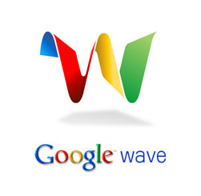

Sonunda Google Wave’i test edebilme imkanım oldu.
Bence davetiye ile katılım olması pek çok kiÅŸide büyük beklentiler oluÅŸmasına sebep oldu. ÇoÄŸu kiÅŸi Wave’i FaceBook tarzı bir sosyal aÄŸ olarak tahmin ediyordu. Ben Facebook, FriendFeed’i satın aldıktan sonra, GoogleWave’in FriendFeed ile benzer bir yapıda olacağını düşünenlerdendim. Genel olarak tüm social-network sitelerini bir çatı altında (GoogleWave) toplanacağını düşünmüştüm. Yanılmışım.
Bu haliyle bile aslında GoogleWave’i bir yenilik, ileriye doÄŸru atılmış bir adım olarak görmek mümkün. E-Posta+Anında MesajlaÅŸma+Forum. Internet dünyasının geliÅŸimine baktığımızda bu 3 öğenin ilk çıktığından bu yana pek fazla deÄŸiÅŸmediÄŸini görüyoruz. GoogleWave kullandıkça farkettimki bir hafta öncesine kadar severek kullandığım bu 3 unsur fazlasıyla eskimiÅŸ ve köhnemiÅŸ.:)
Tamam GoogleWave şimdilik çok yavaş, bazı sorunlarıda var ama henüz Beta aşamasında bile değil.
Bunlarla birlikte GoogleWave internetin gelişimini kökünden değiştirecek çok büyük bir fikirde değil tabi, sadece ileriye atılmış bir adım.
( Bu yazının Google Wave bağlantısı)